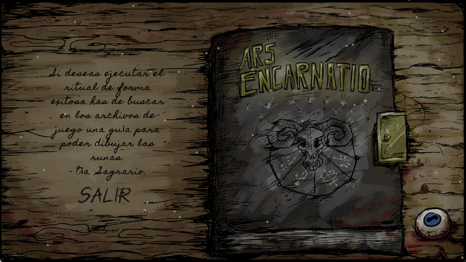
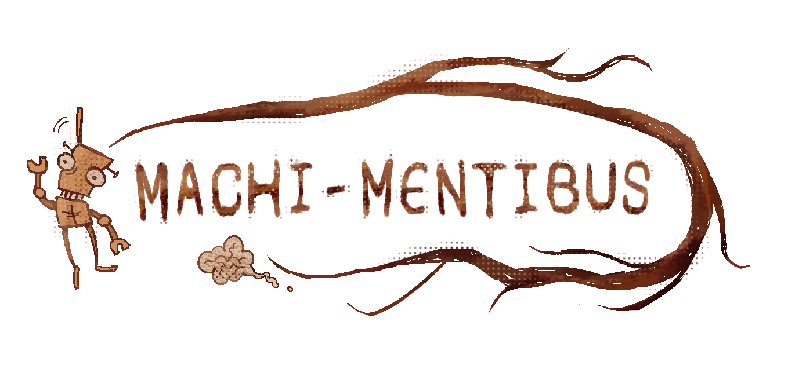
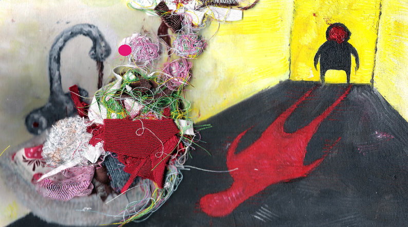
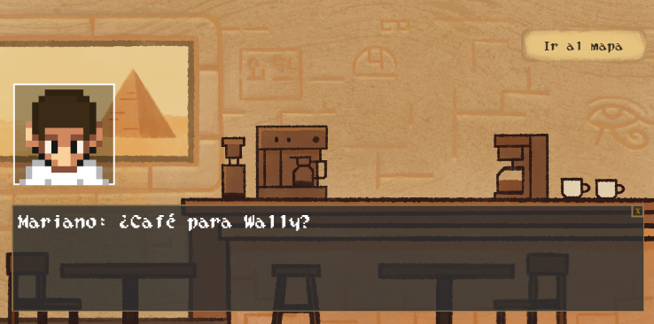

Proyectos ˚˖𓍢ִ໋❀

DIVIDE ET IMPERA
Juego de puzles y plataformas desarrollado en Unity para la asignatura Proyectos I.
Ver proyecto

ARS ENCARNATIO
Juego desarrollado en Godot para la GameJam ComJamOn 2024. Premio a mejor aplicación del tema.
Ver proyecto



WALLY LIKE AN EGYPTIAN
Juego desarrollado en Phaser para la asignatura Programación de Videojuegos en Lenguajes Interpretados.
Ver proyecto